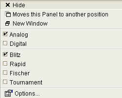
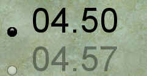

|
|
jose 1.4.1 |
|
Shows the remaining time for both players.
Use Time Controls to set up time controls.

Show the analog clocks:

Show the digital clocks:

Choose a time control setting. See Time Controls for details.
Show the Time Controls .
|
|
© 2002-2006 jose-chess.sourceforge.net |
|